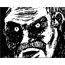
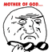

Учти я игрок с большим стажем, и не допускаю ошибок многих нубов
Игрок с большим стажем
Всем привет, дамы и джентльмены, с вами Allexx, и это уже 2-й выпуск газеты про Ру-майн! Если вы еще не видели прошлую газету – обязательно оцените.
С момента первого выпуска на сайте произошло немало новых событий, про которые я вам и расскажу. Да, создание газет это дело не на один час и даже не на
два, так что нового выпуска не было почти месяц. Сейчас исправлю.
Формат остаётся таким же. Есть одно мини-изменение на будущее, но о нём потом.
Напоминаю, что какие-то вещи я могу забыть или потерять, говорите если что не так. Приятного чтения!
Краткие заметки обо всём: предложение новых мемов, кто кому друг, фотки юзеров, комментарии к работе модераторов бездны,
новости студий, изменения юзеров и ДР
Помните скайповые посиделки из прошлого выпуска? Я тоже их не читал, мне страшно стало уже на 4-й строчке. Но 2 января оттуда пришла новая
угроза... Пачка мухоморных наркоманов сговорилась захватить власть на сайте, и у них даже гимн есть!
На сайте флудеры собрались,
Решили форум захватить,
Всё началось, с того, что Тостер
Решил все темы зафлудить.
И будет темочка пылиться
В корзине средь тупых затей -
В военной форме, при погонах,
Погиб Машок – царь всех царей.
Все пруфы предоставлены AssasinCredd и Lektorrr в соответствующей теме на форуме.
Несмотря на попытки заговорщиков внести в расследование смуту и зафлудить созданную тему был сделан вывод, что захватчиков можно опознать по куску гимна в подписи! Так что будьте осторожны...
Ну а вообще на нашем форуме просто царит упоротость. Не обращайте внимания, так и должно быть! Сайт никто захватывать не собирается (хотя...)
Новый Форумный Чат
Можно подумать, что ничего не изменилось. ФЧ вроде бы есть, название тоже. АН НЕТ! Это уже другой ФЧ, ведь старый сгинул 4 января.
Почему? А так получилось!
В чате не сохраняются посты, а тут - будут!
ФЛУДИТЬ НЕЛЬЗЯ!!!
P.S. Настоящая тема была удалена из за слишком крупного срача.
Две силы смешались вместе: форумные баги и срачи, в результате чего получилось то, что получилось.
Предупреждал же не использовать эти дурацкие баги форума... И вот результат – в прошлом ФЧ нафлудили 40 страниц срача, в том числе через баг,
и Wheatley решил проблему радикально – просто удалил тему! Вместе со всеми её чудесными сообщениями. Остаётся надеяться, что этот ФЧ проживет
дольше предыдущего...
Ведь в этой теме с самого начала было активно значительно больше пользователей чем раньше,
а это просто замечательно. Даже эпичные
тайные лойсания есть .
Потерять сообщения и звания второй раз не очень хочется.
Форумные срачи
Причина удаления прошлого ФЧ была в большом сраче, а срач этот состоял ещё из нескольких мини-срачей ну и далее по списку. С удаленным ФЧ
понять происходящее было сложно, но всё же частично возможно:
Apolon27 и Wheatley
На сервере Apolon27 где играл Wheatley произошли НЕПОЛАДКИ! (как в форумной игре). Свидетельства dedepete:
Apolon27,
Ты вёл себя, как агрошкололо! Ай-яй-яй! И не знать меня  ?! Ты вообще с дубу рухнул?
Назначил на админов каких-то придурков, которые обижают игроков! Уитли забанен напрасно! Этих надо было банить! Я всё...
Кстати, всем привет!
dedepete, привет! Я тоже ничего не понял, но на всякий случай осуждаю. Перейдем к следущему срачу.
Борьба за сердце
В этом деле замешаны такие пользователи как: Машок, senyaiv, Lektorrr, lolnoob и неопознанный одноклассник Машок. Я тщетно пытался в этом разобраться, но...
Lektorrr,
Обломись У неё есть одноклассник
Хотя постой-те ка... Я тоже в обломе
Похоже senyaiv любит Машок, Lektorrr тоже её любит, а сама она любит своего одноклассника, причем одноклассником был не lolnoob, так что я вообще не понимаю
при чем здесь он. Но senyaiv и Lektorrr теперь друг друга взаимно НЕ любят, не говоря уже про lolnoob, этот
тостер-наркоман ненавидит всех.
Вроде как senyaiv и Машок вместе флудили расширенным ответом под светом луны... Румайновской луны на логотипе... Но вместе им не бывать...
В ОБЩЕМ СПАСИТЕ Я НИЧЕГО НЕ ПОНЯЛ. Спросите у них сами, что у них такое происходило. А я всё.
От админов про разборки и не только
Неудивительно, что от всего вышеперечисленного с ума сошел не только я, но и наш администратор MadMoss, выпустив 9 января следующее сообщение и закрепив его:
В общем, ваши разборки на форуме (а также писанина мне в ЛС и мессенджер) меня уже порядком достали.
Вижу, вы тут все друг друга стоите.
Отныне будет так - увижу хоть один вброс в сторону кого-либо, буду давать бан сначала на 1 день, а потом на 10. Все выяснения ведите лично или как вы там хотите, но только не на форуме. До этого момента все попадают под амнистию, так что можете не сцать за старые сообщения/темы/ЛС, ибо разбираться в этом всём я не буду.
Я вас предупредил.
Также за бесмысленные сообщения (типа "Флудфлудфлуд" или "Йошкорала, ребзя, я сегодня супчику выпил, а на завтра шмеля закусил") будет даваться бан на 2 дня (это для начала).
Вы хоть флудите нормально, не нужно выходить за рамки дозволенного.
люди если вы читаете это сообщение,я сообщаю что бы вы поскорей ПРОЕ8БАЛИ ЭТИ Е1БАНЫЕ 10000 СООБЩЕНИЙ БЛ4ЯДЬ ЧТОБ 10000 СООБЩЕНИЕ
НЕ ПОЛУЧИЛ СРАНАЯ ВАСИЛИСА ТАК ДАВАЙТЕ НА Х8ЕР ДОХУ6ЯРИМ ЭТИ ЖОПАШНЫЕ СООБЩЕНИЯ ДО 10000!!! всем спасибо за внимание(кто читал)
Сейчас всем нравится заполучать сообщения с КРУГЛЫМ порядковым номером в теме. 1000? 2000? 5000? Заверните всё! Такие сообщения и зовутся ГЕТАМи.
Если красиво оформить ГЕТЫ, то получится линейка постов . Попасть в линейку постов круто и почётно!
Линейка постов
Однако ж получать геты сложно. Нужно попасть в очень нужное время в нужную тему (форумный чат Румайна), да еще и выдержать конкуренцию
с другими желающими получить заветное число. Впрочем, есть одно обстоятельство...
осталось каких то нам десять страниц,
осталось нам 100 сообщений.
надеюсь не будет дебилов,тупиц.
пусть будет тут каждый гений.
но вот интересно узнать,
кто выйграет,кого перегонят.
ну а потом можно будет с начала начать
продолжится сообщений пёстрых ряд.
когда будем писать мы всё вподряд
поистине святое слово флуд
и снова будет флуд-отряд
флуд,флуд,флуд,флуд!
но главное нам слишком не флудить,
иначе тему удалит уитли
ну,или может он её закрыть....
Секрет senyaiv уже раскрыл - флуд постами происходит через расширенный ответ.
Там же можно сделать так, чтобы посты не слипались. И теперь с помощью этой тактики пользователи пытаются забить крутое сообщение именно себе!
Ради него они пойдут на всё – и на флуд в том числе. А это чревато удалением флудилки, что не очень-то и хорошо! Как в итоге это решать - непонятно.
Wheatley, Из первой выпадает горе, из второй - рыло InFeRnAl_KiD
Румайн не Румайн без постоянной угрозы появления постов Василька. Вопрос лишь в том, когда они появятся и насколько ГЛУПЫМИ будут.
В этом месяце появлялся он постоянно и писал всякую ерунду на потеху пользователям. Перечислять даже смысла нет, хотя
1,
2,
3. Где-то он и вовсе перешел границы
агро-школоты, например в теме Машок.
В середине января Василёк-таки нашел вход в ФЧ. Это, конечно, никого не порадовало, но групповыми усилиями
его можно было хотя бы затроллить и изгнать на какое-то время. Однако вскоре
Витас прознал про силу ГЕТов, и понеслась... С твердым намерением заполучить все имеющиеся круглые посты на этом форуме он сменил
свою аву на динамитную шашку и начал осуществление плана.
ПРАЗДНИК ПРИНОСИТ И ФЛУД БОДРЯЩИЙ
ВАСИЛЬКА БАН ВСЕГДА НАСТОЯЩИЙ!
Мы во флудилке уже праздник устроили! На стол накрыли! Там ещё полстола еды! Приходите!
IlyaSidorin
План василька был прост и гениален. Зафлудить ФЧ полностью! План был им осуществлен, однако
чаша терпения юзеров окончательно переполнилась. К уже отправленным жалобам за оскорбления прибавилась ещё и серьёзная жалоба на флуд,
так что Василь быстро получил БАН, а нафлуженные посты удалили. На этот раз обошлось без удаления флудилки. Радовались всем форумом! Правда, по некоторым слухам срок его бана истекает именно сегодня... Но уже неважно.
Картинка! МотивирующаяЗвук не прилагаетсяСерьёзные намерения
Обновления сайта
Новый раздел
22 января пользовател DrLike создал тему с предложением о создании нового раздела на форуме:
Давно хотел предложить, новый раздел. Думаю, он будет нужен, это раздел Вопросы, что бы не засоряли флудилку,
вопросами можно сделать такой раздел и набрать модеров, что бы закрывали темы в которых, был дан ответ, как идея? :)
МЕНЬШЕ ЧЕМ ЧЕРЕЗ час новый раздел был добавлен. 
Вот это оперативность! Всем бы такую хорошую администрацию на сайте! Найти новый раздел можно здесь.
А вот идея Shadowind о создании полностью немодируемого раздела или бездны форума не пошла.
Впрочем в нём сразу бы началась полная анархия и бедлам (Wheatley не одобряет).
Установлен модуль постинга ВК
23 января на сайте появилось небольшое обновление – модуль автоматического постинга ВКонтакт. Узнать подробности вы можете на приложенной фотокарточке, а
обсудить в самой новости на румайне.
Закрепленная новость от админов
Небольшие новостя
Помните, старую игру Лайкни бро? Так вот, давайте её возродим.
Правила, кто не помнит лайкать сообщения перед твоим.
Привет, для продолжения чтения газеты вам необходимо составить заявку по форме ниже:
Реальное имя
Возраст
Ник в майнкрафте
Стаж игры
Адекватность (да / нет)
Грамотность (да / нет)
Skype
Материтесь (да / нет) (пишите 'нет')
Ругаетесь (да / нет) (пишите 'редко')
Это я к чему... Сколько же подобных тем расплодилось на форуме в последние дни.
Что тема со студией, что очередной сервер 1.4.6 (зопустил кстати сегодня заходите), то обязательно заявка в таком виде!
Так что для газеты теперь тоже требуется такая. И точка.
Новые смайлы?
Прямо на новый год поступило предложение от NIGHTDANGER добавить смайликов, или же мемов, или же рейджей на сайт. Пользователи идею поддержали,
и IlyaSidorin скомпилировал возможные варианты в своём сообщении, покажу их тут.
Поздравляю тебя! Это Over9000 тема о просьбе запилить новых фейсов. В подарок ты получаешь игнор темы от администраторов.
Меня иногда раздражает работа модераторов бездны... Вот они вроде говорят - времени мало, не успевают все новости выкладывать/удалять и т. п.
Но тем не менее, чтобы исправить мои и без того нормальные новости, они время находят. Нет никаких существенных изменений,
в основном просто допишут пару слов или изменят где-нибудь цвет. Суть от этого вообще не меняется, но мне немного обидно,
что мою новость переделали. ... ... ... . Может хватит уже изменять и без того пригодные
для главной новости, может стоит взяться за удаление плохих и редактирование неправильно оформленных?
Проблема понятная – хорошие новости затмеваются целым потоком плохих и улетают на дальние страницы, забываясь. Похоже надо новых набирать.
Да. Многие модераторы бездны неактивные. Я один остался, кто еще за Бездной приглядывает. А щас я тоже толком не могу проверять бездну, "Форумный чат", ясно почему.
Тема на форуме, где все называют своих друзей. Вообще её создали еще в начале декабря, но нафлудили в ней только сейчас.
Во благо нейтралитета я просто перечислю ники тех, кто в сообщениях упомянут как друг:
Хотели знать как выглядят наши пользователи в реальности? Это можно устроить. Но стоит ли? На ваш страх и риск.
С днём рождения!... кого?
4 января - поздравляем IlyaSidorin! Надеюсь, что первого места в топе репутации ему достаточно для подарка на ДР!
18 января - поздравляем naswai! Забавно, что буквально в этот же день у него взломали steam-аккаунт, но, вроде бы , вскоре вернули. Немного остренький ДР получился.
Создание студии SS от разработчика SimpleCraft - GeXOn. SES и SS вскоре договорились о сотрудничестве
Изменения пользователей
Альфа-тест нового раздела газеты! Информация про баны и изменения групп. Если всё пойдет по плану, то со следующего выпуска
оформлю отдельный раздел. Если не по плану, то не оформлю.
я видел на сайте даунер мобов,я хотел его сломать,но нужна была алмазная кирка-а я его как дебил рукой...
NIGHTDANGER, подпись
Иди с форума к чертям. Желательно сразу в Большую Гору или в подвал к Пинки Пай. Можно еще Убежище 3 или Проход Примм. Если сильно-сильно быстро надо, просто выпрыгни из балкона.


Wheatley, создатель нового ФЧ
 dedepete
dedepete
 senyaiv
senyaiv
{kind=link}
MadMoss (про разборки)
NIGHTDANGER


vasilek-vitalik


InFeRnAl_KiD
Burning Quantum Cola
IlyaSidorin


DrLike

DrLike


 naswai
naswai
 Машок
Машок
 Wheatley
Wheatley
{kind=link}
{kind=link}
{kind=link}
{kind=link}
{kind=link}
{kind=link}
vision, битва экстрасенсов

Andrej2001 в ФЧ
Allexx в ФЧ
Shadowind, обращение к неразумному